Getting started
The Open OnDemand service is a web service that runs within a safe haven. The service provides apps that allow you to run compute and data-related tasks and packages on compute resources available to your safe haven. Here, we introduce by means of a walkthrough, Open OnDemand and its apps.
First, some Open OnDemand terminology. A compute resource upon which tasks can be run is called a back-end, or, in some parts of Open OnDemand, a cluster. Each run of a task on a back-end is called a job. An Open OnDemand component that allows you to run jobs, or other useful functions, is called an app.
This walkthrough is centred around three apps:
- Run Batch Container runs a software container on a back-end. This app is designed to run batch containers, those that perform some computational or data-related task without human interaction when they are running.
- Run JupyterLab Container runs an interactive JupyterLab service, within a container, on a back-end. Please be reassured that for this 'getting started' guide no Python knowledge is assumed or required!
- Active Jobs allows you to see which of your jobs have been submitted, are running, or have completed.
Your Open OnDemand VM home directory and back-ends
For most back-ends, your home directory is common to both the Open OnDemand VM and the back-ends so your directories and files on the Open OnDemand VM, and changes to these, are reflected on the back-ends and vice-versa.
You may have access to back-ends where your home directory is not common to both the Open OnDemand VM and the back-end i.e., you have unsynched, separate, home directories on each VM. Currently, the back-ends where home directories are not common to both the Open OnDemand VM and the back-ends are as follows:
- Superdome Flex, shs-sdf01.nsh.loc.
To use such back-ends, you need to do some set up to allow Open OnDemand to automatically copy job files from the Open OnDemand VM to your chosen back-end when you submit a job. For future reference, how to do this is described in Enable automated copy of job files to a back-end.
Your project data files, in a project-specific directory under /safe_data, are not available on the Open OnDemand VM.
Run the Run Batch Container app
Run Batch Container runs a batch container on a back-end. By batch container we mean a container that performs some computational or data-related task without human interaction when it is running.
Click the 'Run Batch Container' app on the Open OnDemand home page.
The 'Run Batch Container' app form will open.
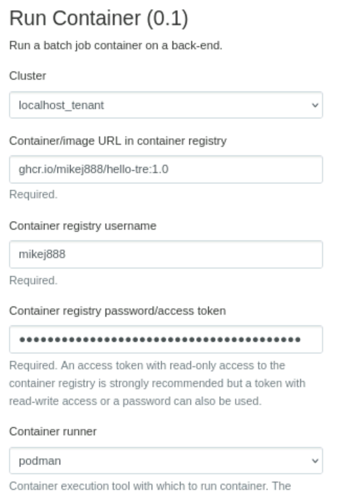
Excerpt of Run Batch Container app formReview and complete the Run Batch Container app form
The app form is prepopulated with the configuration to pull and run a 'hello world' container. When run, the container logs a greeting and information about directories mounted into the container.
Read the form entries in conjunction with the explanations below and make the suggested changes:
- Cluster: A back-end (cluster) within your safe haven on which to run the container. Back-end-specific short-names are used in the drop-down list. If there is only one back-end available to you then this form field won't be shown.
- Select the 'desktop' VM on which you are running the browser in which you are using Open OnDemand.
- Container/image URL in container registry: URL specifying both the container to run and the container registry from which it is to be pulled.
- Leave this value as-is to use the
git.ecdf.ed.ac.uk/tre-container-execution-service/containers/epcc-ces-hello:1.0container, hereon termedepcc-ces-hello.
- Leave this value as-is to use the
- Container registry username: A container registry username is required.
- Leave this value as-is.
- Container registry access token: An access token associated with the username is required. Using an access token that grants read-only access to the container registry is strongly recommended.
- Leave this value as-is, the access token provides read-only access to pull the container.
- Container runner: Container runner - 'podman' or 'apptainer' - with which to run the container.
- Leave this value as-is i.e., 'podman', as this is available on all back-ends.
- Container name (Podman only): Name to be given to the container when it is run. Your job will fail if there is already a running container with that name. If omitted, then the default container name is
CONTAINER_NAME-SESSION_ID, whereCONTAINER_NAMEis derived from the image name (if the image name ismy-container:1.0thenCONTAINER_NAMEismy-container) andSESSION_IDis a unique session identifier for the app's job.- Leave this value as-is.
- CPUs/cores: CPUs/cores requested for the app's job. To run jobs via Open OnDemand requires you to select the resources you think your job will need, including the number of CPUs/cores.
- Leave this value as-is as the all back-ends can provide the default number of cores, and the
epcc-ces-hellocontainer does not need any more.
- Leave this value as-is as the all back-ends can provide the default number of cores, and the
- Memory (GiB): Memory requested for the app's job.
- Leave this value as-is as the all back-ends can provide the default memory, and the
epcc-ces-hellocontainer does not need any more.
- Leave this value as-is as the all back-ends can provide the default memory, and the
- Use GPU?: Request that the container use a GPU. This option is only shown for back-ends that have a GPU.
- Leave this value as-is, as the
epcc-ces-hellocontainer does not require a GPU.
- Leave this value as-is, as the
- Container runner command-line arguments: Command-line arguments to pass to the chosen container runner to control its behaviour.
- Leave this value as-is, as the container does not require any such options to be set.
-
Environment variables: Environment variables to be set within the container when it runs.
- Each line should define one environment variable and value, each in the form,
ENVIRONMENT_VARIABLE=value. - The
epcc-ces-hellocontainer looks for aGREETINGenvironment variable. If set, then the container will print the variable's value as a greeting. If undefined, then the greeting isHello. -
Enter:
GREETING=Hello there
- Each line should define one environment variable and value, each in the form,
-
Container-specific command-line arguments: Container-specific command-line arguments to be passed to the container when it is run. The
epcc-ces-hellocontainer supports two container-specific arguments:- A
-d|--doze INTEGERargument which causes the container to doze (pause) for that number of seconds. If undefined, then the container does not doze. - A
-n|--name STRINGargument which causes the container to print a greeting with that name. If undefined, then the name isuser. -
Enter the following to request a doze of 10 seconds and a greeting with your name:
-d 10 -n YOUR_FIRST_NAME
- A
Launch the Run Batch Container app job
Click Launch.
Open OnDemand submits the job for the app to a job scheduler which schedules the job onto the back-end based upon the resources - the number of CPUs/cores and amount of memory - requested for your job in the app form. Your job is then queued until sufficient resources are available on the selected back-end to run your job. This will depend upon:
- Resources available on your selected back-end.
- Extent to which jobs currently running on the back-end are using the back-end's resources.
- Resources requested by your job.
- Jobs from yourself and others already in the queue for the back-end.
When a job is submitted, a runtime is also requested. If a job takes longer than this runtime, then it is cancelled. The default runtime is 6 hours.
View the job card and job status
Open OnDemand will show an app job card with information about the app's job including:
- Job status (on the top right of the job card): initially 'Queued'.
- 'Created at': The time the job was submitted.
- 'Time Requested': The runtime requested for the job.
- 'Session ID': An auto-generated value which is used as the name of a job-specific directory with files created by Open OnDemand to run the app's job plus any log files created when the job runs. This job context directory is described shortly. On the job card, the session ID is a link to open a File Manager pointing at this job context directory.
- App-specific information, which includes values from the app form:
- 'Container/image URL in container registry': The value you selected on the app form.
- 'Container runner': The value you selected on the app form.
- 'CPUs/cores': The value you selected on the app form.
- 'Memory (GiB)' The value you selected on the app form.
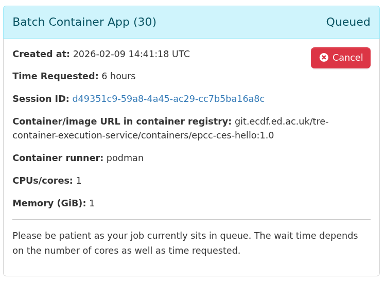
Run Batch Container app job card showing job status as 'Queued'When the job starts, the Job status on the job card will update to 'Starting' and 'Time Requested' will switch to 'Time Remaining', the time your job has left to run before it is cancelled by the job scheduler.
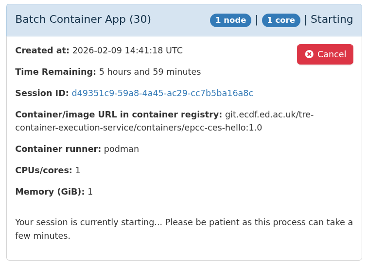
Run Batch Container app job card showing job status as 'Starting'When the Job status updates to 'Running', a Host link will appear on the job card. This is the back-end on which the job, and so the epcc-ces-hello container, is now running. A message of form 'Container epcc-ces-hello-SESSION_ID is now running. Please wait until the container completes.' will also appear on the job card.
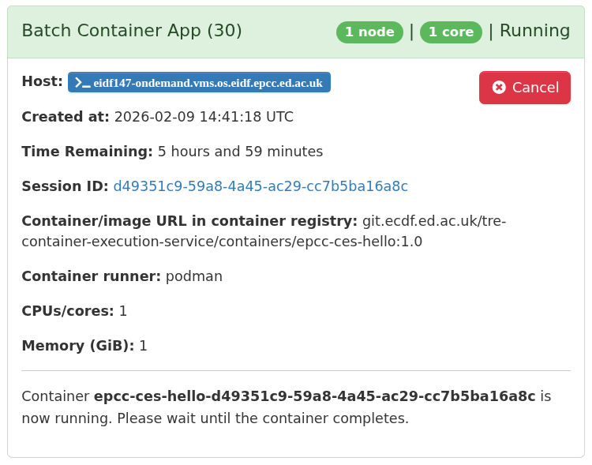
Run Batch Container app job card showing job status as 'Running'All going well, the container, and its job, should complete quickly.
The Job status on the job card will update to 'Completed'.
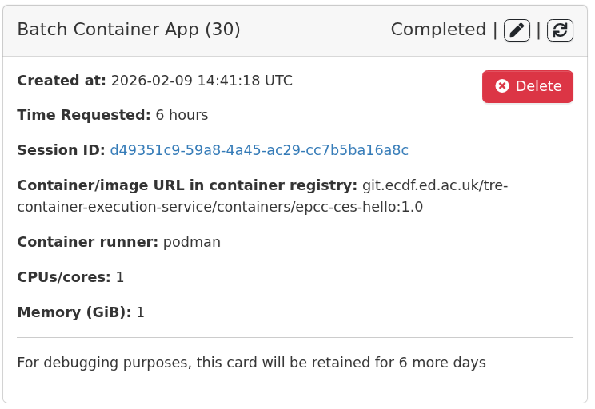
Run Batch Container app job card showing job status as 'Completed'How containers exchange files with back-ends
When a container is run, the following directories on the back-end are always mounted into the container:
| Back-end directory | Container directory | Description |
|---|---|---|
/safe_data/PROJECT_SUBDIRECTORY |
/safe_data |
PROJECT_SUBDIRECTORY is your project group, inferred from your user groups. If such a project-specific subdirectory of /safe_data is found, then it is mounted into the container (but see below). Any files written into /safe_data in the container will be visible to you and and other project members within /safe_data/PROJECT_SUBDIRECTORY on the back-end. |
$HOME/safe_data |
/safe_data |
If $HOME/safe_data is found, then it is mounted into the container. $HOME/safe_data takes precedence over any /safe_data/PROJECT_SUBDIRECTORY directory when looking for the directory to mount into the container at /safe_data. Any files written into /safe_data in the container will be visible to you only within $HOME/safe_data on the back-end. |
$HOME/safe_outputs |
/safe_outputs |
This directory is created in your home directory on the back-end when your container runs. The directory persists after the job which created the container ends. |
$HOME/scratch/APP_SHORT_NAME/SESSION_ID |
/scratch |
APP_SHORT_NAME and SESSION_ID are as above. This directory is also created in your home directory on the back-end when your container runs. This directory exists for the duration of the job which created the container. The SESSION_ID sub-directory is deleted when the job which created the container ends. It is recommended that this directory be used for temporary files only. |
Together, these mounts (and additional, app-specific, mounts) provide various means by which data, configuration files, scripts and code can be shared between the back-end on which the container is running and the environment within the container itself. Creating or editing a file within any of these directories on the back-end means that the changes will be available within the container, and vice-versa.
If a container is run using Podman, then only files within these mounted directories are available within the container, only files created within these directories will be persisted when the container is deleted, and, any files created outside of these directories within the container will be deleted when the container is deleted. App-specific documentation explains what mounts are available, what is persisted when the container is deleted, and what is deleted.
Apps that do not run containers will typically be able to access to any files available to you on a back-end regardless of their location.
View the container's output file
When the epcc-ces-hello container is run, it writes a file, epcc-ces-hello.txt into /safe_outputs within the container, and so into a $HOME/safe_outputs directory on the back-end. This file includes a greeting, your user ID, group ID and groups within the container, and the contents of /safe_data as mounted within the container. An example of safe_outputs/epcc-ces-hello.txt is as follows:
Greetings someuser from the 'epcc-ces-hello' container!
Your user ID within the container is: 0(root).
Your group ID within the container is: 0(root).
Your groups within the container are: 0(root).
Your mounted /safe_data/ files include:
...project-specific files...
Dozing for 10 seconds...
1
2
3
4
5
6
7
8
9
10
...and awake!
Goodbye someuser!
You may be wondering about why your user and group IDs cite 'root'. For some containers run via Podman, including epcc-ces-hello, you are the 'root' user within the container but only within the container. This is why the files in the mounts belong to a 'root' or 'nobody' user and 'root' group when accessed from within the container. Any files you create in the mounted directories will be owned by your own user, and user group, on the back-end.
As mentioned earlier, for most back-ends, your home directory is common to both the Open OnDemand VM and the back-ends so any files created within your home directory on a back-end will be available on the Open OnDemand VM, and vice-versa. This includes the contents of the safe_outputs and scratch/APP_SHORT_NAME/SESSION_ID directories.
View the safe_outputs directory via the Open OnDemand File Manager:
- Select the Files menu, Home Directory option to open the File Manager.
- Click
safe_outputsto view the directory. - Click on
epcc-ces-hello.txtto view its contents.
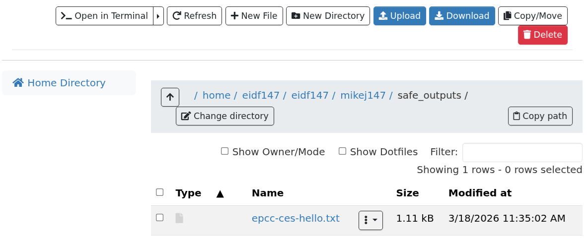
File Manager showingsafe_outputs directory contents after Run Batch Container app completes
An alternative to the File Manager is to log in to the back-end and view the files there, which can be done for any back-end.
View the safe_outputs directory within the back-end:
- Select Clusters menu, back-end Shell Access option, to log into the back-end.
-
View
safe_outputsandepcc-ces-hello.txt:ls safe_outputs/ cat safe_outputs/epcc-ces-hello.txt
As you have accessed Open OnDemand from your 'desktop' VM, you could also access the files directly on your 'desktop' VM, but we used the back-end Shell Access option to introduce this feature of Open OnDemand.
View the app's job context directory and its log file
Within your home directory on the Open OnDemand VM, Open OnDemand creates an ondemand directory. This is where Open OnDemand stores information about your current session and previous sessions.
Every time a job is created by an app, Open OnDemand creates the job files that the app needs for it to run within a job-specific job context directory in an app-specific directory under your ondemand directory.
When the app's job runs, it creates a log file in the job context directory. This log file includes information from the app itself plus any outputs from any commands run by the app. For apps that run containers, the log file also includes outputs from the containers as they run. If an app does not run as expected, or does not run at all, it can be useful to check the log file for hints as to what may have went wrong.
For the epcc-ces-hello container, its log file, named output.log, includes information about the command used to run the container, the mounted directories, the environment variable and arguments provided to the container as well as the outputs that are written into epcc-ces-hello.txt.
Running: /usr/local/bin/ces-pm-pull anonymous ... git.ecdf.ed.ac.uk/tre-container-execution-service/containers/epcc-ces-hello:1.0
...
epcc-ces-hello container
Directory users, groups and permissions:
/safe_data: nobody (65534) root(0) drwxrws--- nfs
/scratch: root (0) root(0) drwxr-xr-x ext2/ext3
/safe_outputs: root (0) root(0) drwxr-xr-x ext2/ext3
...
Found optional 'GREETING' environment variable
GREETING: Greetings
Number of arguments: 4
Arguments: -d 10 -n someuser
-d
10
-n
someuser
...
Greetings someuser from the 'epcc-ces-hello' container!
...
Goodbye someuser!
As for the output files, you can use either the File Manager or log into the back-end (all users) to view the log file.
View the log file via the Open OnDemand File Manager:
-
Click the Session ID link in the job card to open the File Manager, pointing at the job context directory for the job on the Open OnDemand VM.
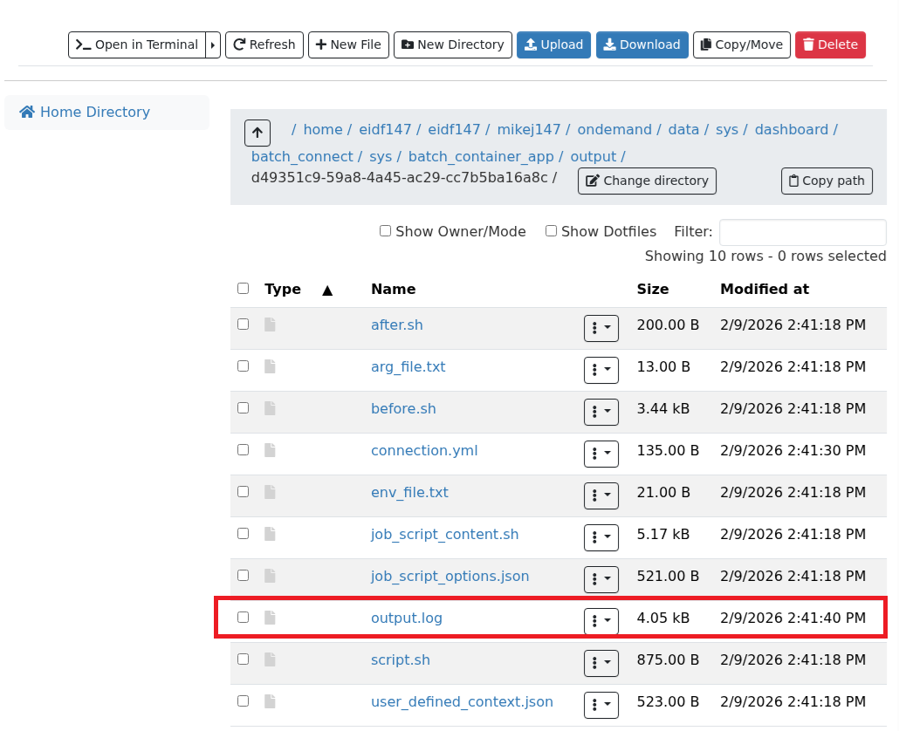
File Manager showing log files within Run Batch Container app's job context directory -
Click on the log file,
output.log.
View the log file within the back-end:
- Select Clusters menu, back-end Shell Access option to log into the back-end.
-
Change into the job context directory for the job on the back-end and show the log file where
SESSION_IDcan be seen on the Session ID link on the job card:cd ondemand/data/sys/dashboard/batch_connect/sys/batch_container_app/output/SESSION_ID/ -
View the log file:
cat output.log
Run the Active Jobs app
Active Jobs allows you to see which of your jobs have been submitted, are running, or have completed.
Click the 'Active Jobs' app on the Open OnDemand home page.
The Active Jobs app will open to show a table of running and recently completed jobs.
You will see an 'epcc-ces-hello:1.0' entry for your app's job. Run Batch Container app jobs are named using the container/image name cited in the container/image URL.
Your job will have a status of 'Completed'.
Each job has a unique job ID created by the job scheduler when you submitted the job. Unfortunately, the job ID is not the same as the session ID for an app created by Open OnDemand. Rather, the job ID is created by the job scheduler. Each job created by an app has both an Open OnDemand session ID and a job scheduler job ID.
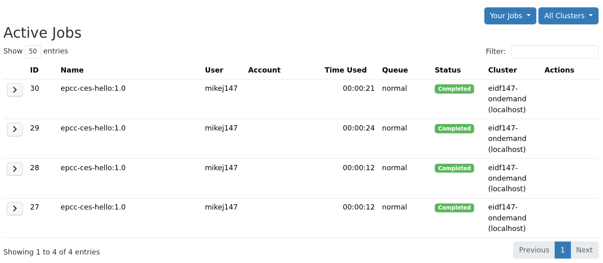
Active Jobs app jobs listTo see more details about the job, click the > button, by the job.
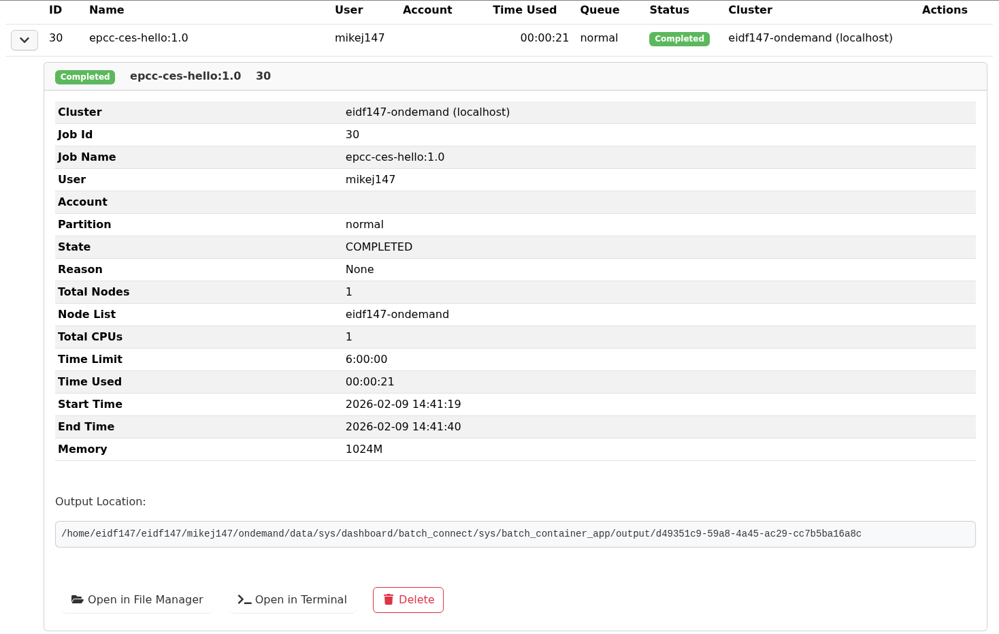
Active Jobs app showing details of completed Run Batch Container app jobIf any app does not run promptly, but is in a 'Queued' state, then the Active Jobs app can provide you with information on other jobs that are running and for which you may have to wait until one or more have completed before your app's job runs.
Run the Run JupyterLab Container app
Run JupyterLab Container runs an interactive JupyterLab service, within a container, on a back-end.
Click the 'Run JupyterLab Container' app on the Open OnDemand home page.
The Run JupyterLab Container app form will open.
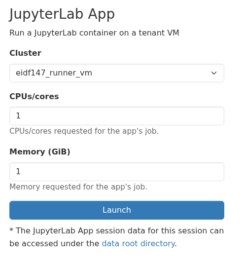
Excerpt of Run JupyterLab Container app formFor Cluster, select the 'desktop' VM on which you are running the browser in which you are using Open OnDemand. If there is only one back-end available to you then this form field won't be shown.
Leave the other settings as-is.
Launch the Run JupyterLab Container app job
Click Launch.
Again, Open OnDemand submits the job for the app to the job scheduler.
And, again, Open OnDemand will show an app job card with information about the app's job including:
- Job status (on the top right of the job card): initially 'Queued'.
- 'Created at': The time the job was submitted.
- 'Time Requested': The runtime requested for the job which defaults to 6 hours.
- 'Session ID': An auto-generated value which is used as the name of the job context directory with files created by Open OnDemand to run the app's job plus any log files created when the job runs. On the job card, the session ID is a link to open a File Manager pointing at this job context directory.
- App-specific information, which includes values from the app form:
- 'Connection timeout (s)': when the app's job starts running, the app will then wait for JupyterLab to become available. If this does not occur within this app-specific period, then the app's job will cancel itself.
- 'CPUs/cores': The value you selected on the app form.
- 'Memory (GiB)' The value you selected on the app form.
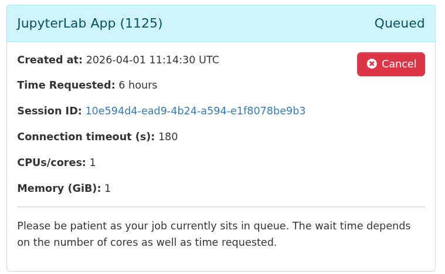
Run JupyterLab Container app job card showing job status as 'Queued'When the job starts, the Job status on the job card will update to 'Starting' and 'Time Requested' will switch to 'Time Remaining', the time your job has left to run before it is cancelled by the job scheduler.
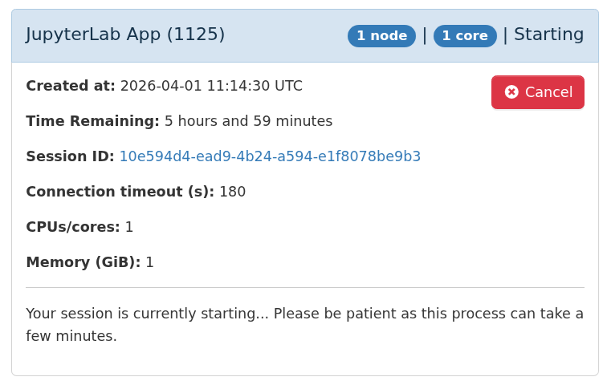
Run JupyterLab Container app job card showing job status as 'Starting'When the Job status updates to 'Running', a Host link will appear on the job card, which allows you to log in to the back-end on which the job, and so JupyterLab, is now running.
A Connect to JupyterLab button will appear. JupyterLab is now ready for use.
A 'JupyterLab is running in Podman container epcc-ces-jupyter-SESSION_ID' message will also appear.
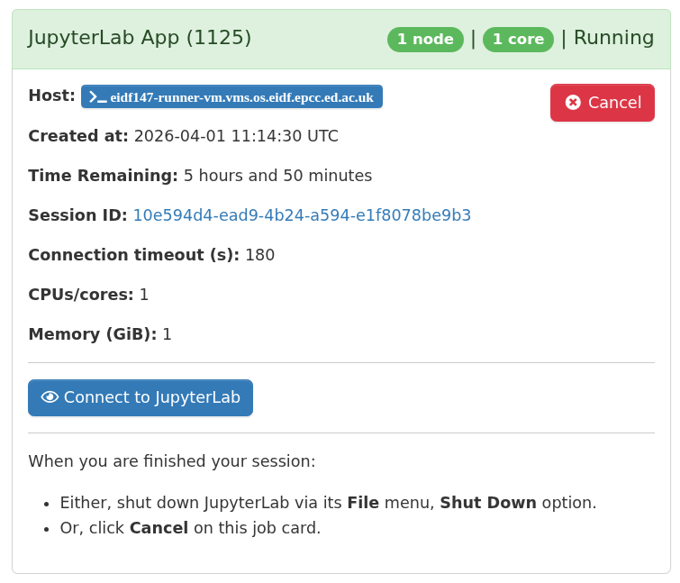
Run JupyterLab Container app job card showing job status as 'Running'Click Connect to JupyterLab. A new browser tab will open with JupyterLab.
You may wonder why you were not prompted for a username and password. JupyterLab runs within the container as a 'root' user. The 'root' user is within the context of the container only. JupyterLab is protected with an auto-generated password. The Connect to JupyterLab button is configured to log you into JupyterLab using this password automatically.
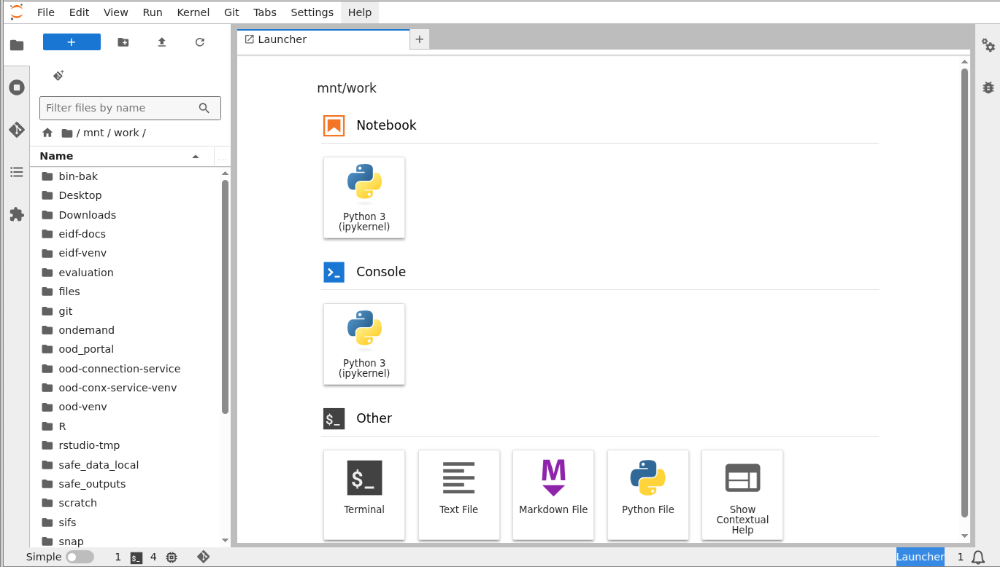
JupyterLabCreate and run a Jupyter Notebook
Create a Jupyter Notebook:
- Within JupyterLab, click the Python 3 icon within the 'Notebook' section of the 'Launcher' tab.
- A Jupyter Notebook, named 'Untitled.ipynb', will appear.
This app mounts your home directory into /mnt/work within the JupyterLab container. The app also configures JupyterLab to use /mnt/work as the default directory for creating new notebooks. If you look at your home directory you should now see the Untitled.ipynb notebook there.
Rename the notebook:
- Right-click the notebook title, 'Untitled.ipynb'.
- Select Rename Notebook....
- Enter New Name:
sine-wave.ipynb. - Click Rename.
If you look at your home directory you should now see the sine-wave.ipynb notebook there.
You can save changes to your notebook at any time via CTRL+S or the 'disk' icon at the top of the notebook.
Within the first notebook cell, enter the following Python code, which creates data for a sine wave, plots the sine wave and saves both the data and the plot:
import matplotlib.pyplot as plt
import numpy as np
import pandas as pd
# 360 degrees is 2*PI radians so define 4*360 degrees
# i.e. 4*2*PI radians for four sine waves.
x = np.arange(0, 4 * (2 * np.pi), 0.1)
y = np.sin(x)
dataset = pd.DataFrame({'time': x, 'amplitude': y},
columns=['time', 'amplitude'])
dataset.to_csv('/safe_outputs/sine-wave.csv', index=False)
dataset.plot(title='Sine wave',
x='time',
y='amplitude',
grid=True)
plt.savefig('/safe_outputs/sine-wave.png')
Click Shift + Enter to run the code. A plot should appear.
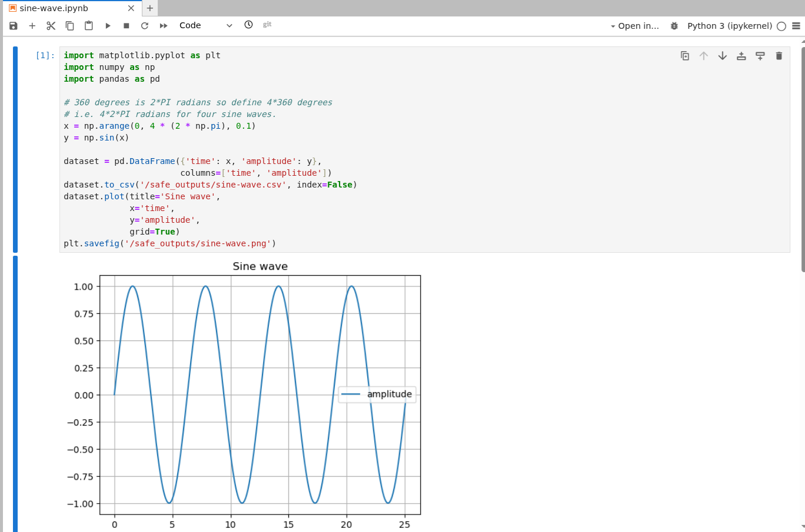
Jupyter Notebook with Python code and a sine waveThe Python code saves the data file and plot to the container's /safe_outputs directory, which, as described earlier, is a mount of safe_outputs in your home directory. If you look at safe_outputs in your home directory you should now have the files sine-wave.csv and sine-wave.png.
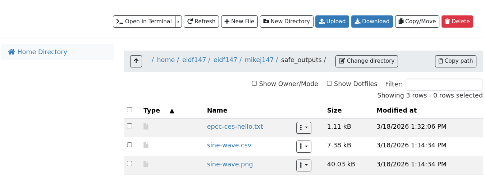
File Manager showingsafe_outputs directory contents after Python code is run in Run JupyterLab Container app
As a reminder, safe_outputs and its contents will persist after the job which created the container ends.
Revisit the Active Jobs app
Click the 'Active Jobs' app on the Open OnDemand home page.
You will see a 'jupyter_app' entry for your app's job. All Run JupyterLab Container app jobs have this name.
You will also see a unique job ID for this job.
Your job will have a status of 'Running'.
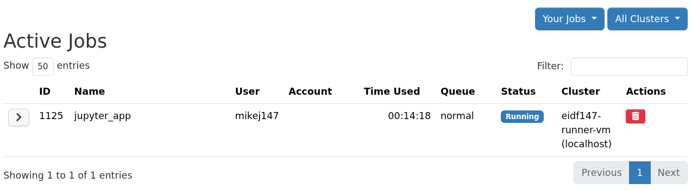
Active Jobs app showing running Run JupyterLab Container app jobTo see more details about the job, click the > button, by the job.
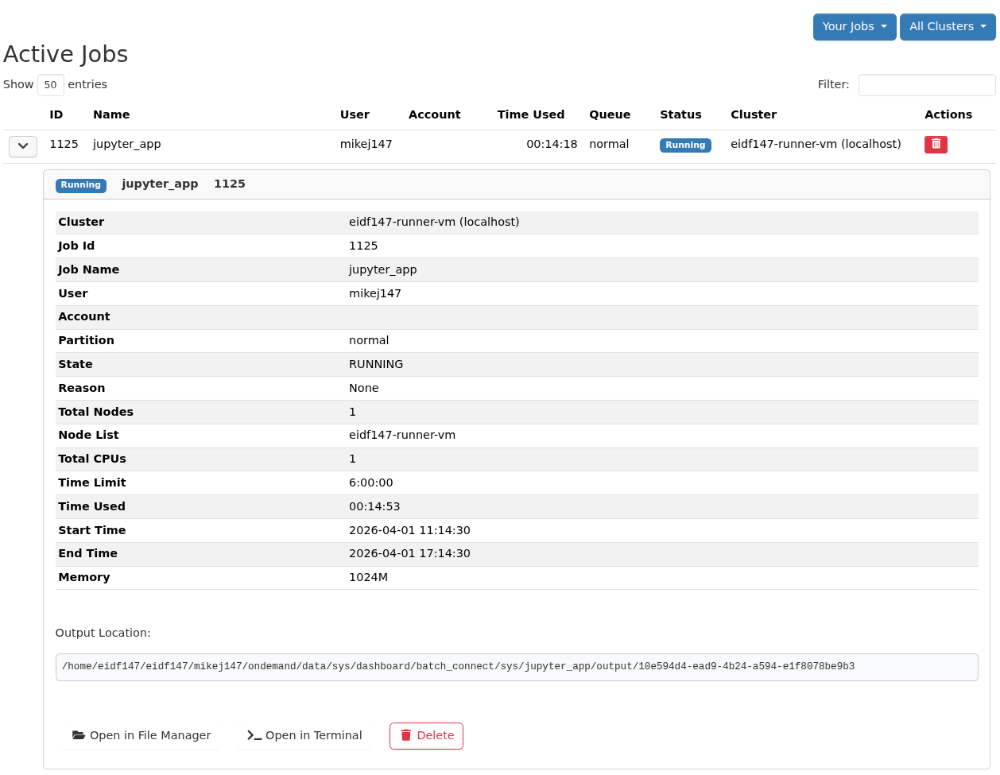
Active Jobs app showing details of running Run JupyterLab Container app jobFinish your Run JupyterLab Container app job
You can end your job by as follows:
- Either, shut down JupyterLab via the File menu, Shut Down option.
- Or, click Cancel on the app's job card.
The Job status on the job card will update to 'Completed'.
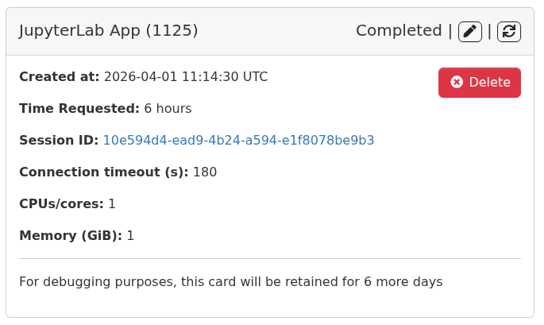
Run JupyterLab Container app job card showing job status as 'Completed'Click the 'Active Jobs' app on the Open OnDemand home page.
Your job will now have a status of 'Completed'.
More information
The following pages provide detailed information about all aspects of Open OnDemand introduced in this walkthrough: